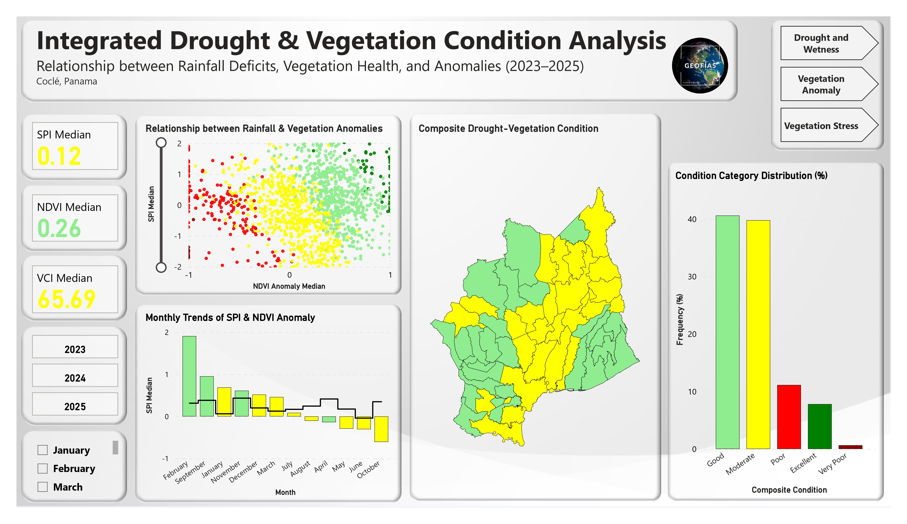
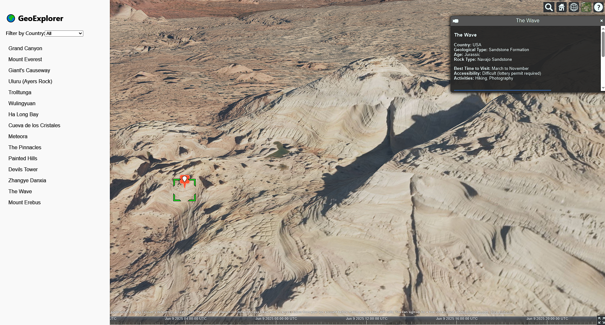
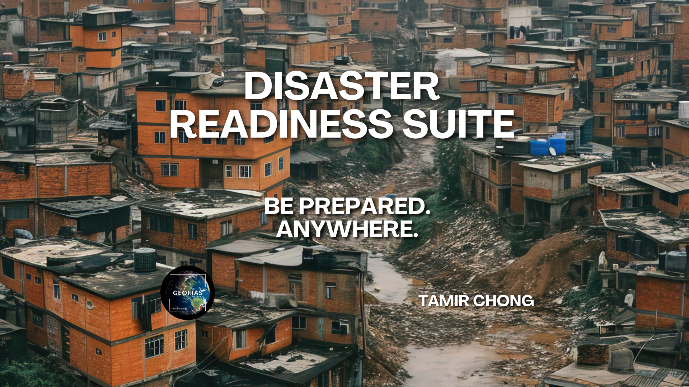
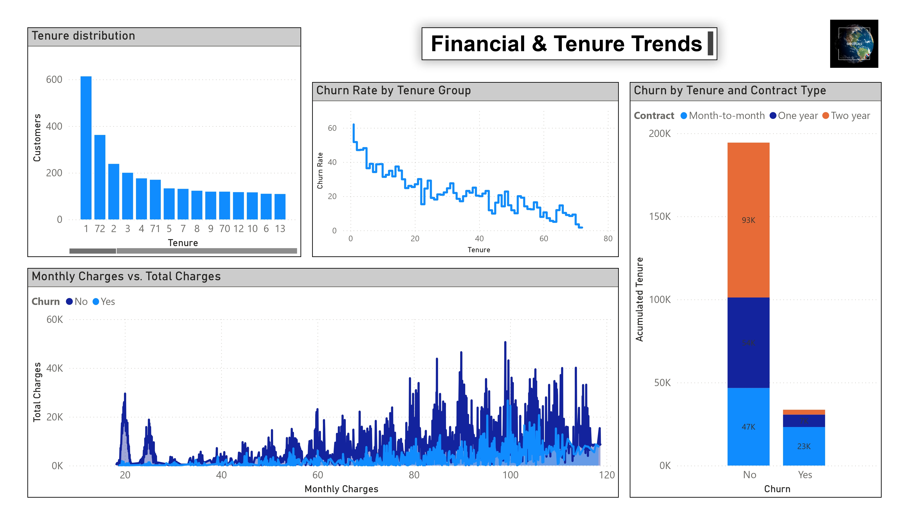
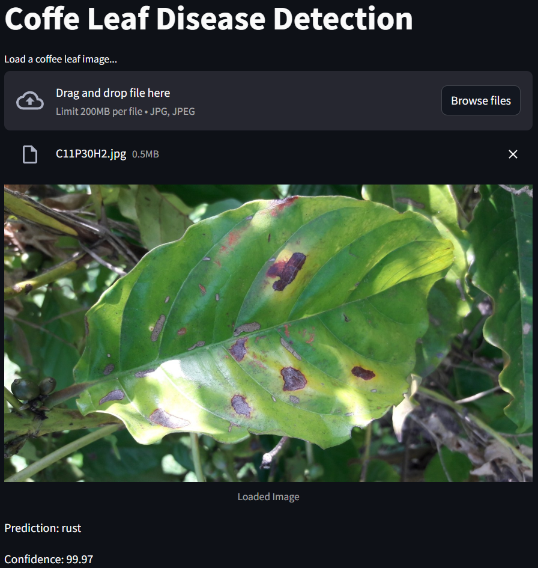
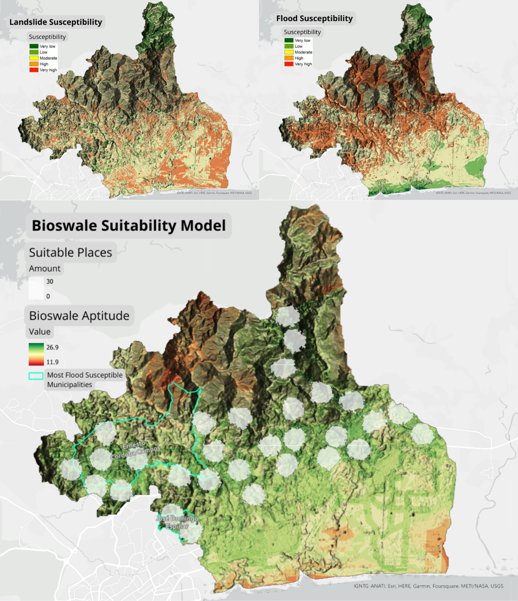

View on GitHub
Drought Monitoring in Panama’s Arco Seco (Coclé) — Multi-Index Analysis (2013–2025)
Analysis of drought dynamics in the Arco Seco region of Panama by integrating satellite-derived indicators — NDVI anomaly, Vegetation Condition Index (VCI), and Standardized Precipitation Index (SPI-1).
 View on GitHub
View on GitHub
Geochemical Nutrient Mapping of Agricultural Soils in Herrera, Panama Oeste
Geochemical characterization of agricultural soils and irrigation waters in the Herrera township of Panama Oeste through the development of spatial nutrient distribution maps.

View on GitHub
GeoExplorer 3D: An Interactive Guide to the World's Geological Wonders
A web-based interactive application built with CesiumJS and React that showcases some of the world’s most remarkable geological-natural sites.

View on GitHub
Disaster Readiness Suite
An integrated solution for disaster preparedness, designed for individuals, field teams, and humanitarian organizations. It includes a guide book, checklist and KoboToolbox form.

View on GitHub
Customer Churn Prediction
A full-cycle data science project to predict customer churn using machine learning. Includes data extraction via SQL, model building in Python, and interactive business dashboards using Power BI.
 View on GitHub
View on GitHub
Groundwater Potential Zone (Arco Seco, Panama)
A geospatial analysis through QGIS to identify and map areas with high potential for groundwater resources by integrating multiple geographical and environmental factors.

View on GitHub
Global Coffee Trade and Disease Detection in Coffee Leaves
An exploratory data analysis (EDA) of global coffee trade data with a deep learning model that identifies diseases in coffee leaf images deployed as a web application using Streamlit.

View on GitHub
Bioswale Suitability for Flood Mitigation in Rio Juan Díaz Basin, Panama
Suitability evaluation of the Rio Juan Díaz basin in Panama for implementing bioswales as a flood mitigation strategy.
Get In Touch
Please feel free to contact me at my email address or through my LinkedIn Account below.